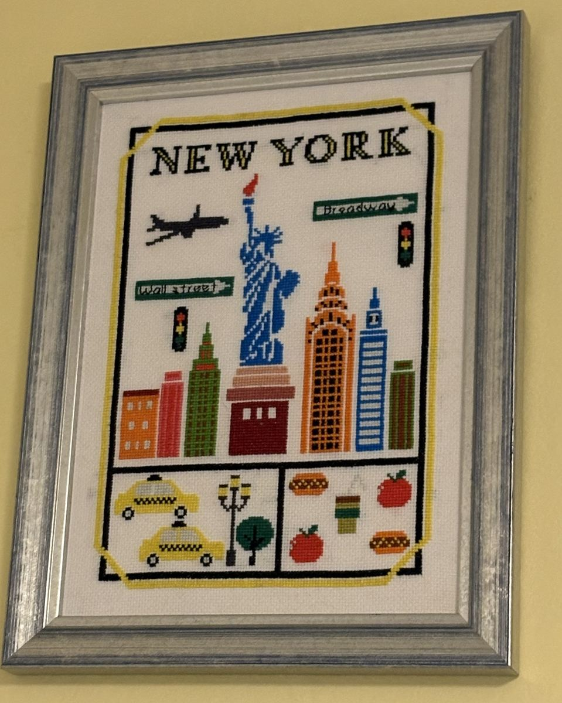
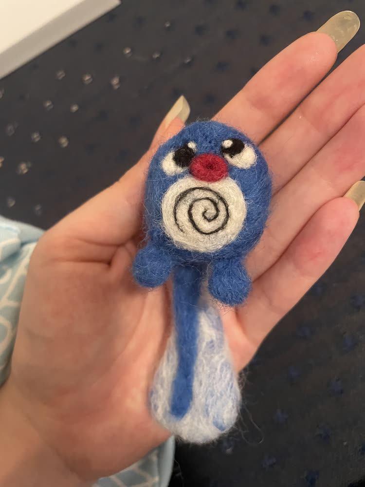
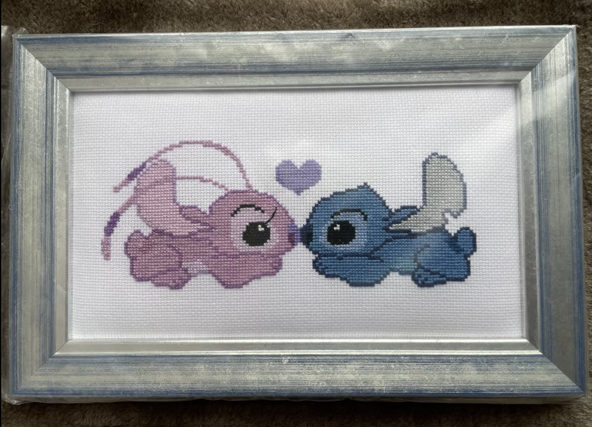
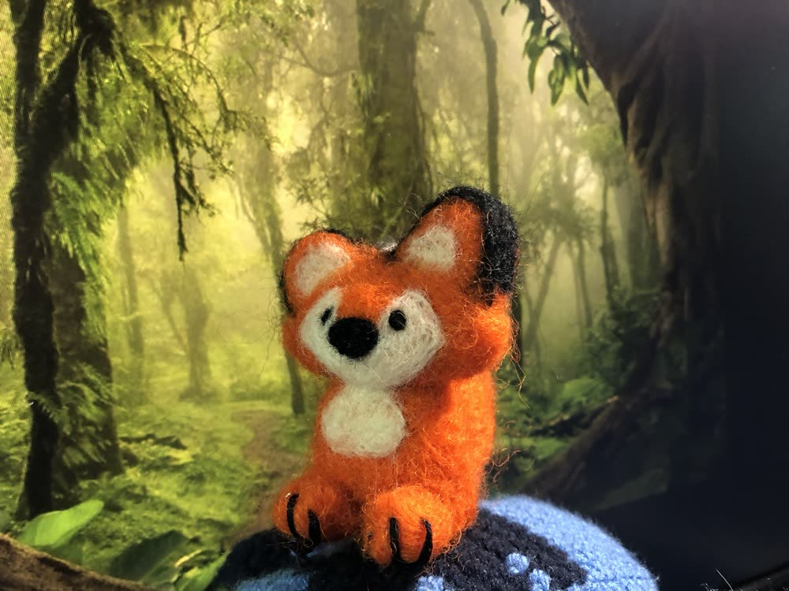
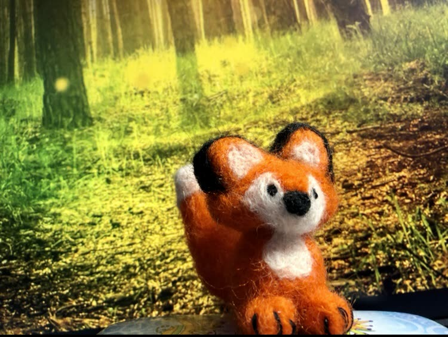

Crafts
New York Cross Stitch
This cross stitch took me two years to complete, and another two years to actually get framed and hang in my apartment.

Needlefelted Poliwag
My first freehand needlefelt endeavor, based on the Pokemon Poliwag. It won First Prize in the Textiles category of the Global Operations and Technology Craft Show at work.

Cross-Stitch
I cross-stitched this image of Stitch and Angel and had it custom framed.

Needlefelted Fox
In the first few months of 2021, I tried out a new art form, and made this fox from a kit my brother gave me.



Orca Rug
In the first few months of quarantine, when I went home to Massachusetts, I picked back up latch hooking (and cross stitching!) and this orca rug was the result.